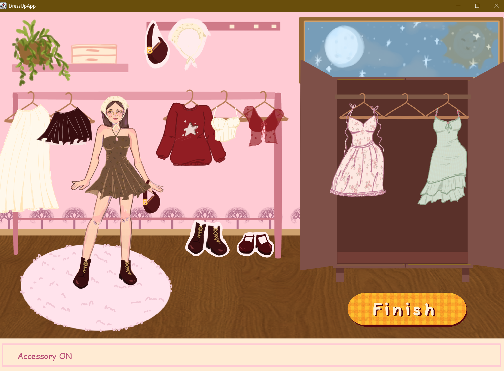
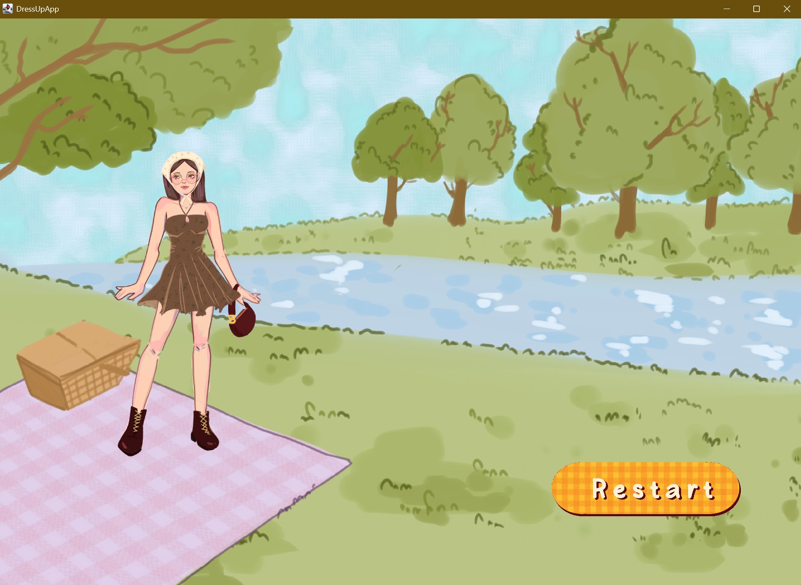

Dress Code
UI/Visual Design & Interactive Simulation
Project Type: School Project (IAT 267 - Intro to Game Design)
Date: March 2025 – April 2025 (1 month)
Tools Used: Eclipse, Java, Figma, Photoshop
Skills: UI design, state-based programming, digital illustration, drag-and-drop interaction, audiovisual design
Role: Visual Designer & Developer
Overview
Dress Code is a cozy, interactive dress-up simulation that lets players style characters using drag-and-drop mechanics. It combines hand-drawn visuals, playful animations, and a seamless UI to create an experience that’s both nostalgic and creatively expressive.

Dress Code gameplay UI featuring draggable clothing items and cozy visuals
Project Objective
The goal was to design an interactive game that encourages creative exploration through fashion. I wanted the experience to feel calming, familiar, and expressive, like flipping through a childhood paper doll book. The challenge was to combine visual design with responsive interaction in a way that felt smooth and emotionally engaging.
Design Process & Features

Visual Language & UI Design
Inspired by my own wardrobe, all clothing assets were hand-drawn and digitally illustrated to reflect a soft, vintage tone. I used warm color palettes and soft outlines to evoke a cozy, nostalgic feel. UI elements were designed with minimal styling so the focus would stay on the outfits and avatar.
Wireframes and visual explorations testing cozy aesthetics
Drag-and-Drop Interaction
I programmed a custom drag-and-drop system in Java using a state-based structure. Clothing items could be moved and placed with snap-to zones over the avatar. Items had layered logic to allow stacking (e.g. hats over hair, coats over tops), and responsive hover highlights gave users feedback as they played.
Custom drag-and-drop mechanic in Java
Immersive Details
To enhance player immersion, I added atmospheric features like a day-and-night window background that changed as time passed. Audio elements were also implemented — sound effects played as users clicked and dressed the character, while calm background music created a cozy ambiance.
Challenges & Iterations
Interaction & Feedback
Initial versions lacked drag feedback, so users couldn’t tell if they were interacting correctly. I added glowing outlines on hover, snapping animations, and drop shadows to improve responsiveness.
Layering Complexity
Handling overlapping clothes without glitching (e.g. hair covering hats) required rewriting the item hierarchy. I implemented z-index logic using draw order arrays to fix this.
Synchronizing Audio
Audio feedback was inconsistent at first. Some sounds were delayed or triggered multiple times. I solved this by throttling the sound calls and preloading assets in memory to reduce latency.
Screen Transitions
Moving between intro, gameplay, and ending screens caused crashes early on. I resolved this by modularizing screen states using an enum-based controller that preserved game data during state transitions.
Project Outcome
Dress Code was praised by classmates and test users for its whimsical art and simple, polished interactions. Many users commented on the personal feeling of the wardrobe — which made sense, since each piece was inspired by clothes I actually own. This project helped me realize the power of merging art and code to create emotionally engaging experiences.
Takeaways
- Combining illustration with programming allows for deeply personal and expressive design.
- Audio and subtle motion can enhance atmosphere and user comfort without overwhelming.
- Careful interaction design (even for small elements like drag feedback) makes a big impact.
- Modular programming and early prototyping helped prevent late-stage bugs and crashes.